Browser (three r170, WebGL2), the broadcast sounds (Scripts/broadcast_audio.py, shared with Unreal), and a collision review of
physics 1 (shipped) and physics 2 (training/models/v2). Builds on the same day's web pass (post chain, tiers, sounds,
cheek morphs). Rendering and sound are display only: node Web/check.mjs gg|kk|gk|kg, live_check,
api_check and python Web/build.py pass.
?fx=)| Effect | Tiers | Cost at 412 x 915 | Where |
|---|---|---|---|
| Linear-depth copy every screen pass reads | ultra, cinema (any depth effect) | < 0.2 ms | fx.js DepthCopyPass |
| Screen-space subsurface scattering (skin only) | ultra 16 taps, cinema 32 | ~0.7 ms | fx.js SSS |
| Volumetric key light, ray-marched, shadow-mapped (replaces the cone sprite) | ultra 24 steps, cinema 64 | within noise at 412 (< 1 ms) | fx.js VOL |
| Depth of field on the director's subject | ultra 24 taps, cinema 48 | ~0.4 ms | fx.js DOF |
| Palm motion blur (180° shutter along each hand's screen path) | high and up | only near a fast hand | fx.js MBLUR, app.js look.track |
| Planar floor reflection (lacquered deck / satin mat, Fresnel) | cinema | +8.7 ms (re-renders the scene) | fx.js floorReflection |
| Skin micro-relief (Blender-baked pores and creases, triplanar, bind pose) and a GGX sweat lobe that beads with fatigue | all | ~0 (in the skin shader) | fx.js skin, Scripts/blender_skin_detail.py |
| Crowd: per-spectator shirt/skin variety, sway, excitement bounce | all | ~0 (vertex shader) | art.js tagCrowd, fx.js crowdMaterial |
| Film grain luminance-weighted and per-frame, chromatic fringe growing to the edges | high and up | ~0 | fx.js LensShader |
| Spray drops settle on the mat | all | ~0 | fx.js Spray |
| Mesh clamp (drawn palm out of the drawn face and jaw) | all | ≤ 0.36 ms per hand at the face | art.js clipData/clipPush, app.js pushers |
Tier cinema is new (above ultra). Auto starts at ultra when the drawing buffer is at most 1 Mpx and at high above that (from the ladder: both ≥ 45 fps); phones start at high (low with little memory); the step-down below 30 fps for 4 s stays, now across four tiers.
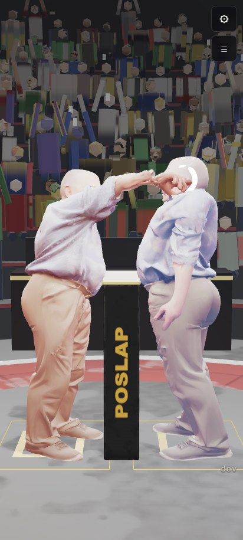
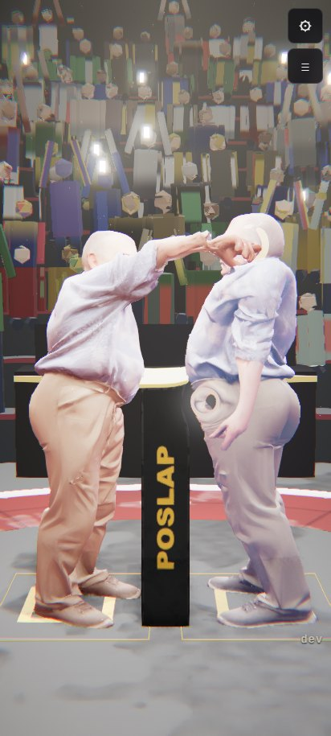
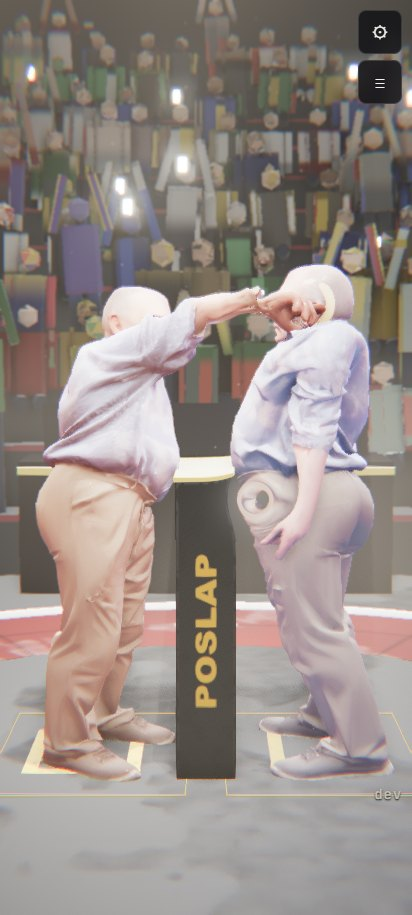
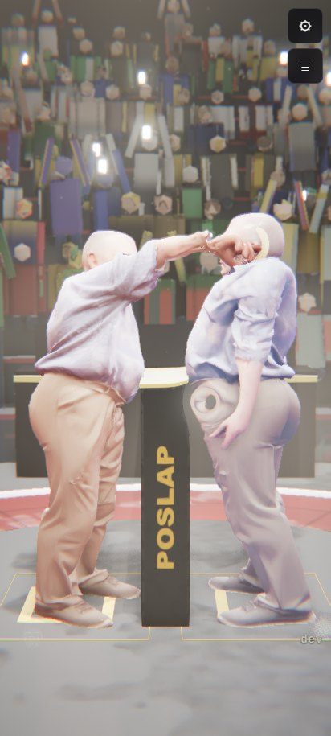
node Web/fps_ladder.mjs: headless Chromium on the GPU (ANGLE D3D11, vsync and the frame cap off), the side shot,
the physics paused (the ladder isolates drawing cost), 2.5 s warm-up and 3.5 s measured per step, fps = frames delivered per
second. Green ≥ 45, yellow ≥ 30, red < 30.
| Step (cumulative) | 412x915 fps | ms/frame | Δ ms | 1080x2400 fps | ms/frame |
|---|---|---|---|---|---|
| low | 307 | 3.2 | 116 | 8.6 | |
| high | 195 | 5.1 | +1.9 | 54 | 18.4 |
| ultra (11-03 set: full GTAO, 4K shadows) | 111 | 9.0 | +3.9 | 7 | 144.9 |
| + skin SSS (16 taps) | 103 | 9.7 | +0.7 | 15 | 66.3 |
| + volumetric key light (24 steps) | 136 | 7.3 | -2.4 | 102 | 9.8 |
| + depth of field (24 taps) = ultra | 107 | 9.4 | +2.0 | 19 | 51.8 |
| cinema: SSS 32, volume 64, DoF 48 | 88 | 11.3 | +2.0 | 9 | 111.5 |
| + floor reflection = cinema | 50 | 20.1 | +8.8 | 10 | 103.6 |
At 412 x 915 every tier stays above 45 fps. Cinema with the reflection is the floor at 50 fps; a 1.5x supersampling step
(--ss) took it under that in the earlier run. At 1080 x 2400, high is the last tier above 30 fps. Ultra and cinema drop
to 7-19 fps there, with stalls of 100-800 ms, so single steps at that size are not reliable. This is where the ladder "gets down
to 30 fps". The JSON files are next to this page.
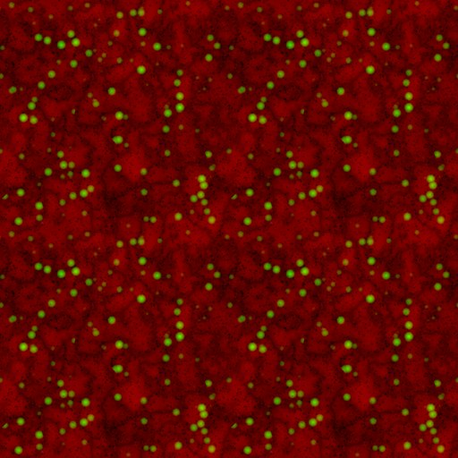
Contact frame (paused on the strike event). Before: the old clamp only pushed the hand box off the head sphere, so Grandpa's fist (the scan's left hand) sits in the eye socket. After: art.js clipPush pushes the hand out of the face's own vertices (head- and neck-skinned).
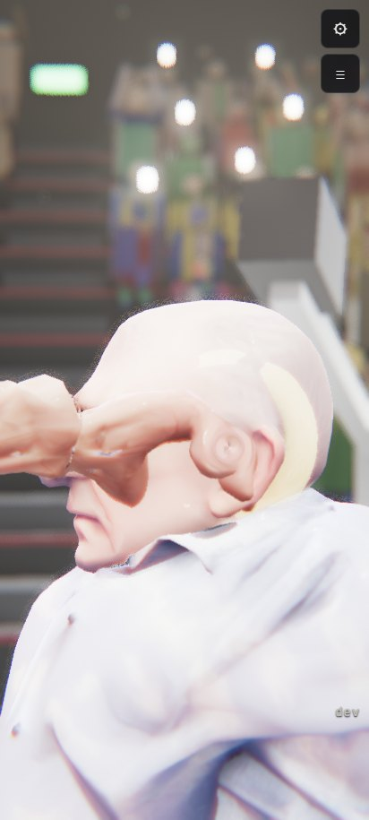
SSS, skin micro-relief and sweat lobe, DoF, crowd variety, all at once.
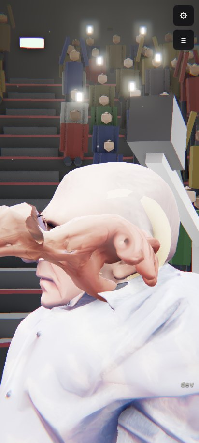
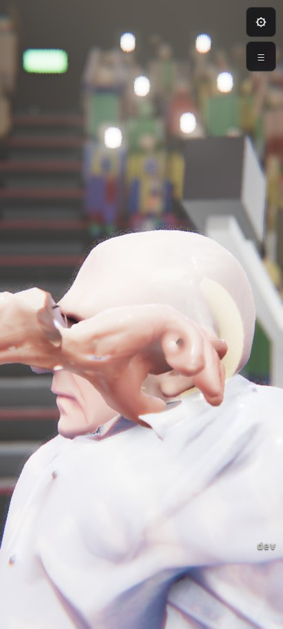
Skin pixels only (the skin writes alpha 0), same-depth taps, red 3.2 mm / green 1.3 / blue 0.8 mm: shadow edges and pores soften toward red. Subtle at phone size by design: it is physically scaled (1.3 px per mm at this distance).
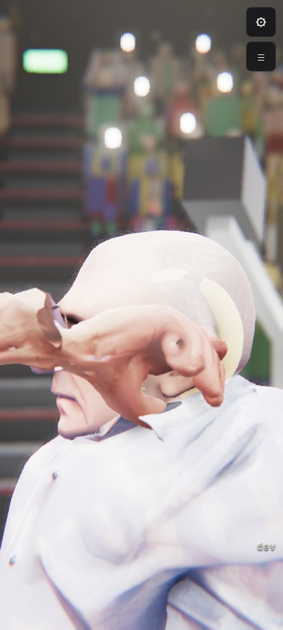
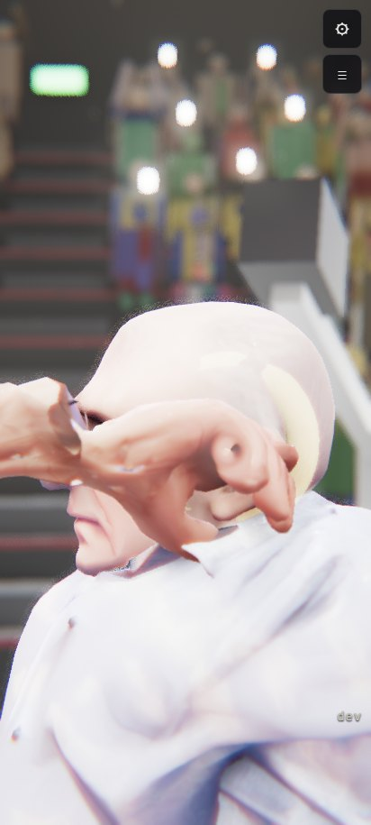
Tileable pore/crease height and sweat-bead mask baked in Blender (Scripts/blender_skin_detail.py), triplanar in the bind pose so it rides with the skin; a GGX water lobe (roughness 0.12, F0 0.02) on the beads, growing as the stamina drops.
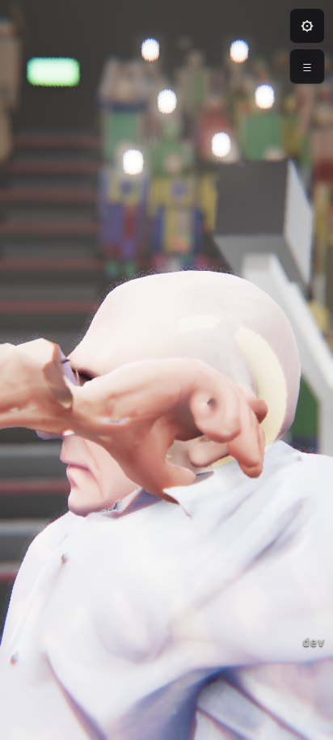
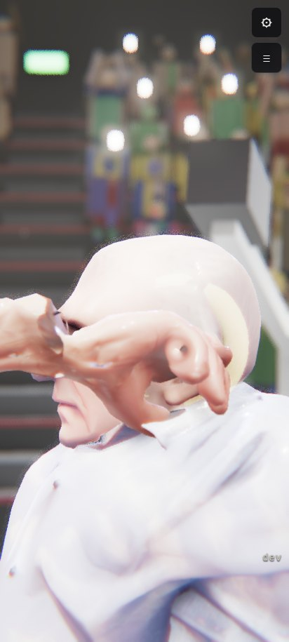
Thin-lens circle of confusion focused on the director's subject (the orbit target), eased like a focus pull; a Vogel-disk gather that keeps the sharp foreground from smearing over the background.
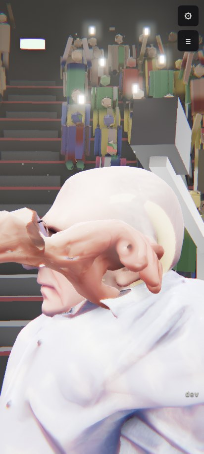
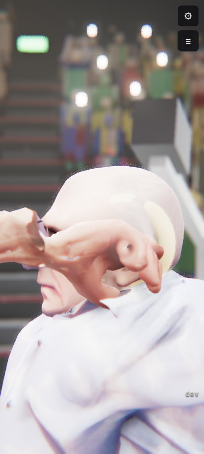
Ray-marched in-scattering inside the key's bounding volume, occluded by the key's own shadow map (the athletes cut shadows into the haze), Henyey-Greenstein phase g 0.35, drifting haze-machine wisps (3D value noise), jittered per pixel.
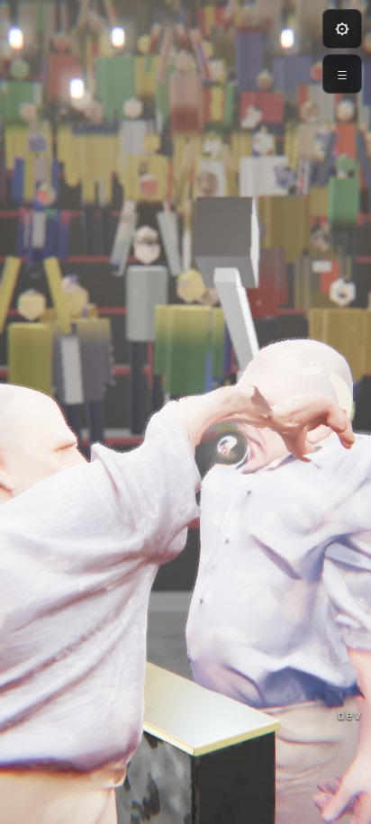
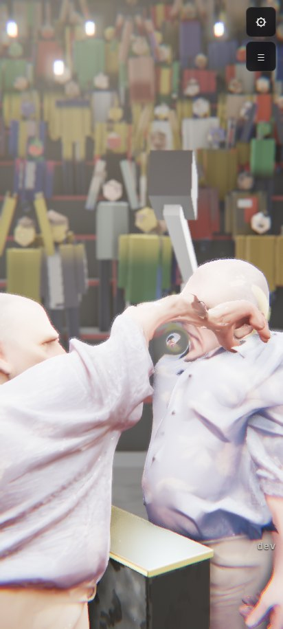
The scene mirrored in the stage floor (three Reflector, 0.75 resolution, HalfFloat): sharp-ish on the lacquered deck, blurred and weaker on the vinyl mat, Schlick Fresnel; it re-renders the scene, the ladder's biggest single cost.
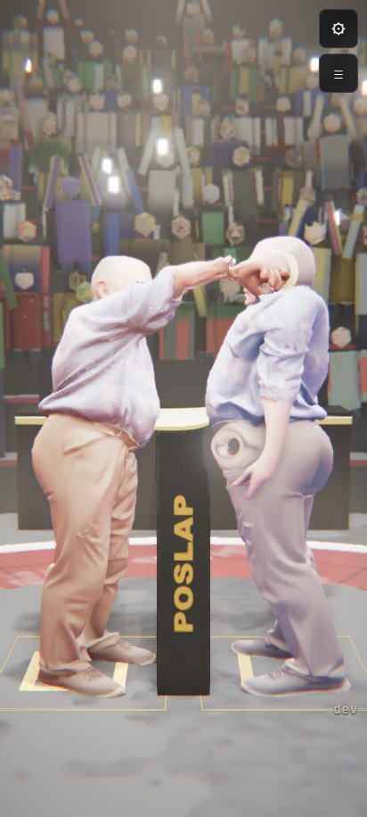
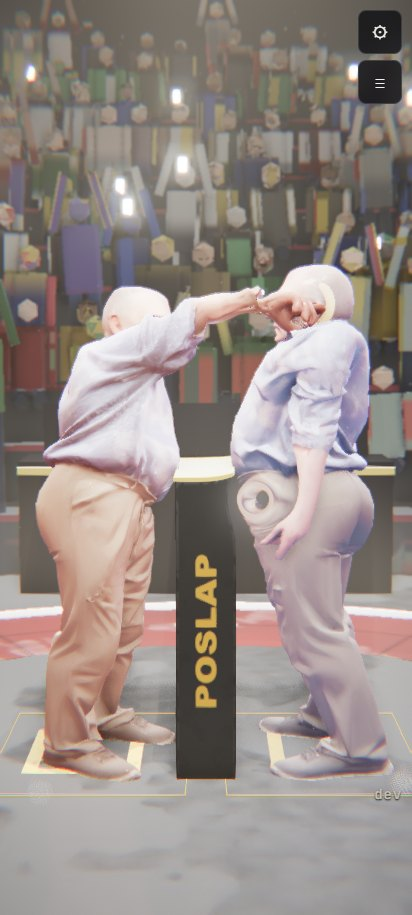
~5,900 spectators found in the unwelded crowd mesh at load (weld by position, merge a head over its torso), each with an id and a feet-to-head height: own shirt and skin tone, a sway when calm, a bounce and heads-up with the excitement after a slap or a knockdown.
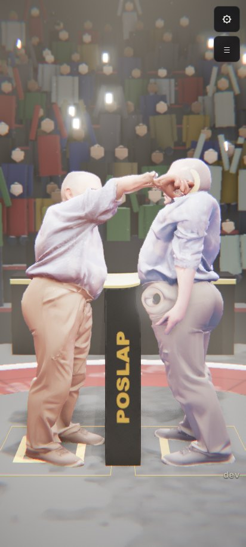
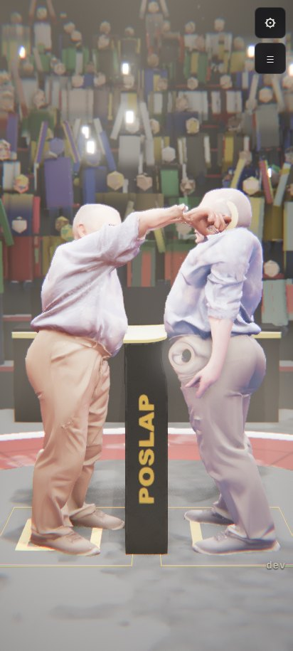
Every file was re-rendered: the ones whose model did not change (Thud, Squeak, Scrape, Step, Breath, CrowdNear, CrowdLoop, Bell) differ only by their random draws. Web audio is 2.39 MB in total (32 kHz 16-bit; it was 1.6 MB). Unreal's 44.1 kHz copies are in Content/Art/Exports/Audio and still need the re-import.
| before | after | before: measured | after: measured | spectrogram (before | after) |
|---|---|---|---|---|
| Slap.wav | Slap.wav | centroid 1897 Hz, rise 1.7 ms, -40 dB length 186 ms, crest 24.4 dB | centroid 1837 Hz, rise 1.8 ms, -40 dB length 186 ms, crest 24.7 dB | |
| Slap1.wav | Slap1.wav | centroid 1043 Hz, rise 2.3 ms, -40 dB length 185 ms, crest 21.8 dB | centroid 1175 Hz, rise 1.9 ms, -40 dB length 185 ms, crest 23.7 dB | |
| Slap2.wav | Slap2.wav | centroid 1935 Hz, rise 1.8 ms, -40 dB length 180 ms, crest 24.7 dB | centroid 2736 Hz, rise 2.2 ms, -40 dB length 167 ms, crest 25.7 dB | |
| Slap3.wav | Slap3.wav | centroid 1405 Hz, rise 2.1 ms, -40 dB length 187 ms, crest 24.7 dB | centroid 1669 Hz, rise 1.9 ms, -40 dB length 168 ms, crest 26.9 dB | |
| Step.wav | StepDeck.wav | centroid 156 Hz, rise 1.1 ms, -40 dB length 149 ms, crest 16.6 dB | centroid 593 Hz, rise 0.0 ms, -40 dB length 241 ms, crest 24.6 dB | |
| Breath.wav | Breath_kim.wav | centroid 1278 Hz, rise 1124.9 ms, -40 dB length 1546 ms, crest 17.0 dB | centroid 1209 Hz, rise 1110.1 ms, -40 dB length 1540 ms, crest 18.7 dB | |
| Breath.wav | Breath_matt.wav | centroid 1278 Hz, rise 1124.9 ms, -40 dB length 1546 ms, crest 17.0 dB | centroid 1218 Hz, rise 367.8 ms, -40 dB length 1740 ms, crest 17.3 dB | |
| CrowdReact.wav | CrowdReact.wav | centroid 627 Hz, rise 220.6 ms, -40 dB length 2912 ms, crest 15.2 dB | centroid 1320 Hz, rise 173.1 ms, -40 dB length 2915 ms, crest 15.0 dB | |
| Bell.wav | PAChime.wav | centroid 1104 Hz, rise 0.6 ms, -40 dB length 2599 ms, crest 13.7 dB | centroid 692 Hz, rise 321.9 ms, -40 dB length 2199 ms, crest 12.2 dB | |
| (new) | Grunt_grandpa.wav | - | centroid 256 Hz, rise 8.5 ms, -40 dB length 410 ms, crest 14.2 dB | |
| (new) | Grunt_kim.wav | - | centroid 311 Hz, rise 10.4 ms, -40 dB length 413 ms, crest 14.6 dB | |
| (new) | Grunt_matt.wav | - | centroid 239 Hz, rise 9.6 ms, -40 dB length 408 ms, crest 15.2 dB | |
| audio.js hallIR (procedural) | ArenaIR.wav | see the list above | | |
DOCS/20261103/collision_review.md)48 real matches on the CPU (8 per pairing gg / gk / kk, physics 1 and 2, the shipped brains), every contact measured per pair class.
| Pair class | Physics 1 (shipped) | Physics 2 | Fix |
|---|---|---|---|
| palm vs head | not realistic: 2-7 cm into the skull sphere for 15-90 ms | realistic: median 1 cm, max 3 cm, 12-25 ms, restitution 0.1-0.25 | physics 2 (retrain) |
| palm vs jaw / neck | not realistic: the sphere stops above the jaw; the slap lands on the neck (up to 5 cm deep, not a strike) | better (1.2-2 cm), still no jaw | physics 3 proposal: jaw capsule in the face set + stiff hand-neck/jaw pairs |
| body vs body | 2-5 cm into arms/chest | max 3 cm | physics 3: stiffer cross-athlete limb contacts |
| self | sub-mm median; hands press 2-4 cm into the belly at most | welded pairs collide now; max 1.2-2.9 cm | physics 3 (as above) |
| sole vs floor | planted, no slip, no bounce; a stomp sinks 3.4 cm | max 0.75-1.9 cm, torsional friction | physics 2 |
| hands vs podium | sub-mm, max 1.3 cm; the brace slides (plausible) | same | - |
| energy | no blow-up, KE jump ≤ 4.3 J/step | no blow-up, ≤ 11 J/step | - |
| drawn palm in drawn face | the old browser clamp: still in the jaw on 98-100 % of mirror-match contacts (table below) | done in the browser (mesh clamp); Unreal: no hand clamp yet | |
| Drawn palm depth at palm-head contacts (median / max, clipping) | samples | raw | old clamp | mesh clamp |
|---|---|---|---|---|
| physics 1 gg | 190 | 27.8 / 33.2 mm, 98.4 % | 27.1 / 33.0 mm, 98.4 % | -16.4 / -7.2 mm, 0.0 % |
| physics 1 gk | 408 | 18.2 / 37.5 mm, 79.9 % | -8.3 / 36.9 mm, 23.5 % | -9.9 / 6.9 mm, 0.2 % |
| physics 1 kk | 158 | 33.1 / 36.3 mm, 100.0 % | 32.7 / 36.5 mm, 100.0 % | -7.0 / -1.3 mm, 0.0 % |
| physics 2 gk | 20 | -5.0 / 17.6 mm, 25.0 % | -11.1 / 6.5 mm, 10.0 % | -10.3 / -5.1 mm, 0.0 % |
| physics 2 kk | 42 | 33.7 / 36.5 mm, 100.0 % | 33.7 / 36.5 mm, 100.0 % | -9.2 / -3.5 mm, 0.0 % |
The mesh-clamp numbers are the head-skinned face only (Python check). The browser also runs the same pass against the neck-skinned lower jaw.